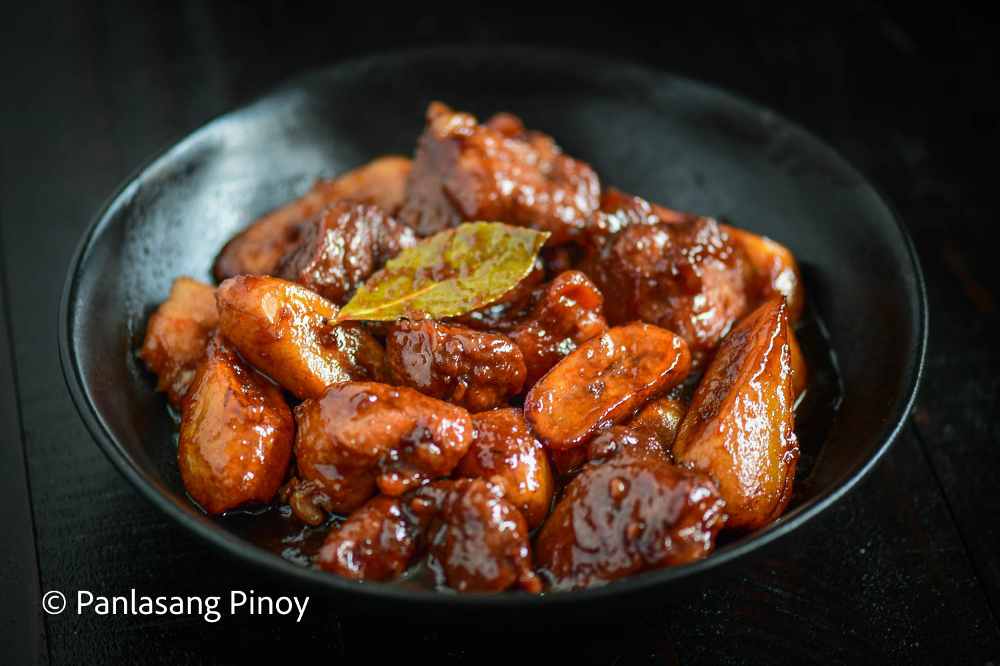
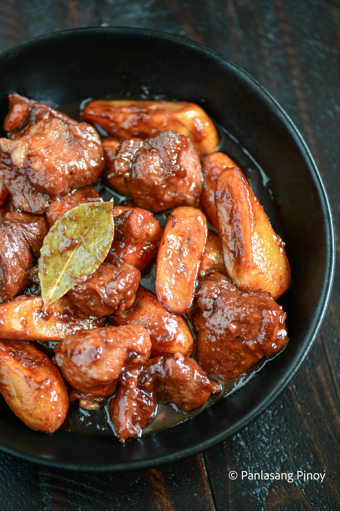

Estofado (Probinsya Style)
The Philippines, being an archipelago, is home to many different cultures and cuisines. This is why the Bulalo you eat in Metro Manila might not taste the same in, say, Batangas or Tagaytay. But this difference among cities and regions brings about a most colorful selection of food made by Filipinos. And so we should welcome such renditions, and also feel free to experiment. This Probinsya style Estofado is just one of many examples of dishes that are similar to the classic recipe, but have a certain uniqueness you might want to try out.
Firstly, let’s talk about Pork Estofado. This dish is named after the Spanish term “estofar” referring to braising inside a covered pan. This describes the cooking method for our dish quite nicely. As for taste, it may be likened to adobo, but with a delightful mix of fried plantains, as well as carrots. This provides some subtle sweetness, as well as some nice textures that go well with tender pork shoulder.
Now what do you think of when you hear about probinsya style dishes? Often, what first comes to mind is the idea of a more comforting meal that reminds you of home. It is the same for this recipe. It involves a couple more steps than the familiar recipe, but that results in a more flavorful pork and stew, as a result of marinating, and a few added ingredients.
Are you ready to have a go at creating some Estofado, Probinsya Style? Let’s make our way to the kitchen!
How to cook Estofado (Probinsya Style):
Marinating the pork:
Like I mentioned earlier, we use marinade to give the pork shoulder some flavor. And so you can start this step by putting your ingredients together in a large bowl. Use 2 lbs. Of cubed pork shoulder, 5 cloves of garlic you’ve chopped, as much ground black pepper as you’d prefer, 6 tablespoons of soy sauce, and 8 ounces of pineapple juice. Once these are all in your bowl, mix them thoroughly. And then you can let them marinate for 40 minutes.
Frying the saba bananas:
Now we need to prepare the ingredient that can distinguish Estofado from other dishes quite well, which are fried plantains. Get 5 saba bananas, cut them in half, and then start heating up 1 cup of cooking oil in your pan. Fry these slices until they turn medium brown in color. Then you can take them out of the pan. We will use them again later.
Mixing in the marinade and other ingredients:
Pour about 3 tablespoons of cooking oil into a pan, and let this heat up. Once hot, you should add 5 cloves of garlic and 1 onion, both of which you’ve chopped. Sauté these together until the onion has gotten soft. Then incorporate 1 star anise for an added depth to the flavor. Keep the mixture cooking for another minute.
After that, we should remove the pork from the marinade by filtering. For this, you will just need to use your kitchen sieve. Once we have the pork separated, you should sauté this until it becomes light brown. Now put 1 tablespoon of soy sauce, and proceed to place your marinade into the pan. Pour 1 cup of water into it as well. And then as the name of this dish goes, you should cover the pan, and wait for this to boil.
Afterwards, you can integrate your 4 dried laurel leaves for an aromatic element to your Estofado. Now cover the pan again, and set the stove down to its lowest setting. We will still cook this for 40 more minutes. After that, take the star anise out, and feel free to throw it away. Then place ¼ cup of brown sugar inside. But if you’d like to keep adding sugar, you can add about ¼ cup more depending on what’s needed.
Keep this all cooking until you have reduced the sauce to half. Then you can incorporate your fried bananas from earlier. Continue cooking for 5 minutes more, and then you’re finished!
| This is a recipe for probinsya style pork estofado. | |
| Course | Main Course |
| Cuisine | Filipino |
| Keyword | pork estofado |
| Prep Time | 5 minutes |
| Cook Time | 10 minutes |
| Servings | 4 people |
| Calories | 1000kcal |
| Author | Vanjo Merano |
- 2 lbs pork shoulder kasim, cubed
- 5 saba bananas cut in half
- ½ cup brown sugar
- 8 ounces pineapple juice
- 6 tablespoons soy sauce
- 4 laurel leaves dried
- 1 star anise
- 1 onion chopped
- 5 cloves garlic chopped
- Salt and ground black pepper to taste
- 1 cup cooking oil
Ingredients
- In a large bowl, combine pork, garlic, ground black pepper, soy sauce, and pineapple juice. Mix well. Marinate for 40 minutes.
- Prepare the saba bananas by frying it. Heat oil in a pan, fry the sliced bananas until it turns medium brown. Remove from the pan and set aside.
- Heat around 3 tablespoons of cooking oil in a pan. Sauté garlic and onion until the latter softens.
- Add star anise. Continue cooking for 1 minute.
- Separate the pork from the marinade by filtering using a kitchen sieve. Sauté the pork until it turns light brown.
- Add 1 tablespoon soy sauce and then pour the marinade into the pan. Pour 1 cup water. Cover and let boil.
- Add laurel leaves. Cover the pan and adjust your stove to the lowest setting. Cook for 40 minutes.
- Remove the star anise. You can discard it.
- Add brown sugar. Note: use half as indicated in the recipe first. You can add more later if needed.
- Continue cooking until the sauce reduces to half. Add the fried bananas. Continue cooking for 5 minutes.
- Transfer it on a serving bowl. Serve. Share and enjoy!